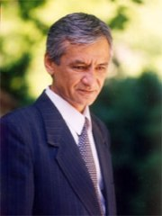

|  | MUHAMMAD YUSUF |
|---|
Muhammad Yusuf (taxallusi; asl ism-sharifi Yusupov Muhammadjon) (1954.26.4, Marhamat tumani — 2001.31.7, Ellikqalʼa tumani) — Oʻzbekiston xalq shoiri (1998), jamoat arbobi. Muhammad Yusuf qalamiga mansub she'rlar xalqimiz qalbidan chuqur joy olgan. Mana necha yillar o'tsa ham uning she'rlarni yoddan biluvchilar juda ko'plab topiladi. Ayniqsa, Muhammad Yusuf qalamiga mansub "Ulug'imsan, Vatanim" she'ri biz uchun qadrlidir. Undagi har bir so'z xalqimizga hos bo'lgan xususiyatlarni o'zida mujassam etgan. She'rni mhsiqaga jo aylab qo'shiq qilgan va bu qo'shiq eshitganda bizda Vatan tuyg'usi yanada kuchayadi.
Muhammad Yusufning dastlabki sheʼrlari „Oʻzbekiston adabiyoti va sanʼati“ haftaligida bosilgan (1976). Shundan boshlab respublika matbuotida uning sheʼr, ocherk va maqolalari muntazam ravishda chop etila boshlagan. Ilk sheʼrlar kitobi — „Tanish teraklar“ (1985). „Bulbulga bir gapim bor“ (1987), „Iltijo“ (1988), „Uyqudagi qiz“, „Halima enam allalari“ (1989), „Ishq kemasi“ (1990), „Koʻnglimda bir yor“ (1991), „Bevafo koʻp ekan“, „Yolgʻonchi yor“ (1993), „Erka kiyik“ (1995) va „Osmonimga olib ketaman“ (1998) sheʼriy kitoblari nashr etilgan. Mazkur kitoblarga kirgan sheʼrlarda Muhammad Yusufga mansub boʻlgan avlodning eng olijanob va yuksak insoniy fazilatlari bilan birga yoshlik sururi, ishq va muhabbatning nafis navolari, oʻzbekona, sodda, ayni paytda ezgu, bokira va betakror tuygʻu hamda kechinmalari oʻzining yorqin ifodasini topgan. Soʻzning badiiy imkoniyatlaridan mahorat bilan foydalanish, musiqiy ravonlik, tuygʻular tiniqligi, samimiylik va mayinlik, ruhiyat manzaralarini loʻnda va yakdil ifodalay bilish Muhammad Yusufga sheʼriy uslubining yetakchi xususiyatlaridir. Uning qalamiga mansub aksariyat sheʼrlar taniqli xonandalar tomonidan ijro etilmoqda. Muhammad Yusuf ijodi ayni gullab yashnagan paytda, Ellikqalʼa tumanida sheʼriyat muxlislari bilan uchrashish maqsadidagi ijodiy safarida vafot etgan. Andijonda dafn etilgan.
Toshkent shahri va Marhamat tumanidagi koʻchalardan biri, shuningdek, Andijon shahridagi bolalar kutubxonasi va Marhamat tumanidagi sanʼat maktabi Muhammad Yusuf nomi bilan ataladi.